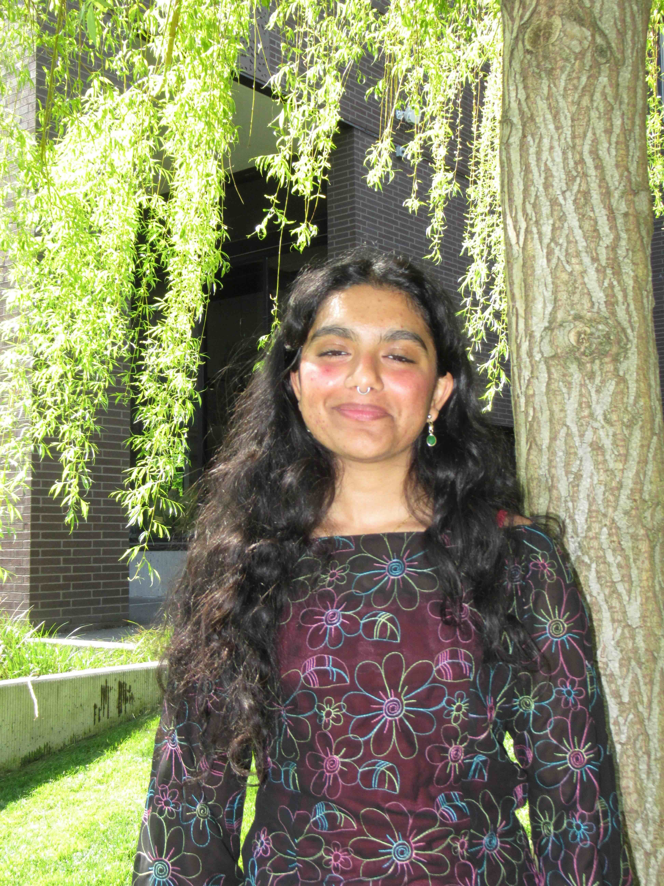

I'm currently working on developing an isolated, time-dependent Milky Way gravitational potential that utilizes Milky Way mass data, and observed candidates from streams and satellites of our local group. My model is driven by analytical models of host potentials that undergo mass accretion over time, as well as exhibit non-axisymmetric orbits. Visit my Github for user tutorials on integrating stellar streams in time-evolving Milky Way host potential models!
Here is my Harvard ADS page:
Here is my GitHub profile (give that Follow button a smash!):
In addition to physics I have been training extensively in opera and art song repetoire, and continue to be involved with the music community very intensively.
